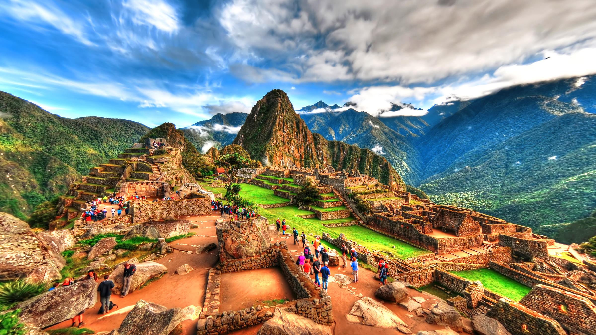
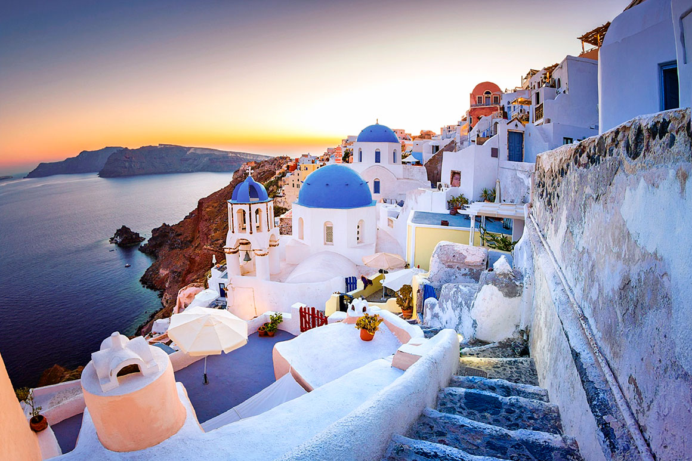
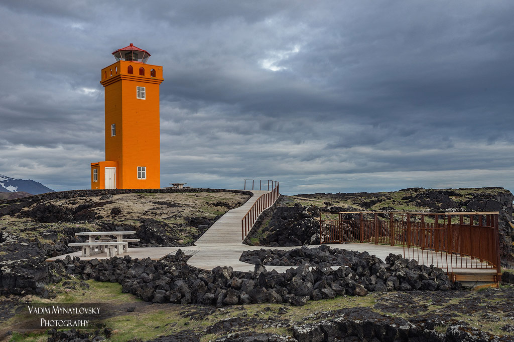
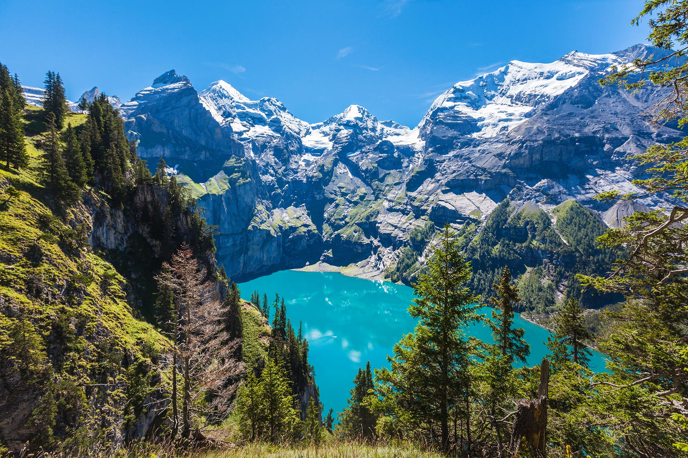

Про нас
Ми - команда ентузіастів подорожей, які збираються розповісти вам про найкращі місця для відвідування на цій планеті. Відкрийте для себе пригоди, які чекають на вас у різних куточках світу.
Місця для відвідування

Мачу-Пікчу, Перу - древнє місто і чудо археології, розташоване в Андських горах.

Санторіні, Греція - відомий своїми білими будинками і вражаючими видами на Егейське море.

Маяк Міла, Ісландія - визнаний одним з найкрасивіших маяків світу і популярним об'єктом для фотографування.

Сафарі в Серенгеті, Танзанія - відкрийте для себе африканську дику природу та багатство тваринного світу.

Гори Альпи, Швейцарія - ідеальне місце для зимового лижного відпочинку та гірських походів.